Gratuit · libre · sur votre machine
Laissez vos agents coder. Gardez la preuve.
Forge Ops orchestre des sessions Claude Code story par story. Aucune étape n'avance sans un fichier de preuve sur le disque, et la dernière porte reste toujours humaine.
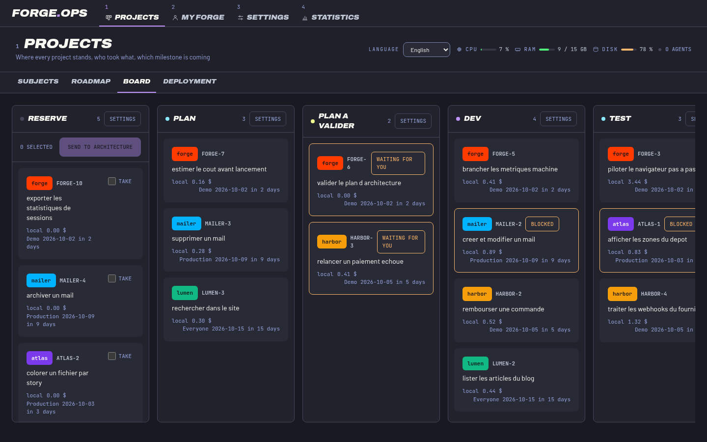
Le problème
Un agent qui code seul fait trois bêtises.
Forge Ops les rend impossibles, pas simplement déconseillées.
Le test écrit après coup
Un test rédigé une fois le code fini, ou modifié pour passer, coûte plus cher que pas de test : il rassure. Ici, le test est écrit rouge d'abord, et la story refuse d'avancer tant qu'elle n'a pas son jumeau de test.
L'état affiché n'est pas l'état réel
Un agent qui plante en plein milieu laisse une base cohérente avec elle-même et fausse par rapport au disque. Chaque étape doit pointer vers un fichier réel, sinon elle n'existe pas.
Les agents se marchent dessus
Deux sessions qui touchent le même fichier sans le savoir, c'est un conflit découvert au merge. Les zones sont réservées avant l'écriture, et refusées si quelqu'un d'autre les tient.
La méthode
Une story, un jumeau de test, six preuves.
Le directeur écrit des épiques. Les architectes IA les découpent en stories. Chaque étape produit un fichier que le serveur lit avant de la valider, dans l'ordre, sans raccourci.
-
Spec
Périmètre, critères d'acceptation, hors périmètre, jumeau de test écrit.
evidence/STORY/spec.md -
Plan
Découpage, placement dans les couches, risques.
evidence/STORY/arch.md -
Test
Les tests rouges, avec leur sortie collée. Un échec de comportement, pas d'import.
evidence/STORY/tests.md -
Build
Les mêmes tests au vert. Si une mutation survit, le build est refusé.
evidence/STORY/build.md -
Verify
Le parcours de la story déroulé pour de vrai dans un navigateur piloté.
evidence/STORY/verified.md -
Review
Qualité, puis sécurité, puis accessibilité. Un constat fort bloque.
evidence/STORY/reviewed.md -
Ship
Un humain valide. Aucun agent ne passe une story à terminé.
porte humaine
Les écrans
Quatre écrans pour tout suivre.
Projets, Ma forge, Réglages, Statistiques. Chacun répond à une question.
Projets · Sujets
Où en est chaque projet, qui a pris quoi.
La vue du directeur : tous les projets d'un coup d'œil, leur météo, les sujets en retard, ceux qui n'ont pas de responsable, et la charge de chaque personne de l'équipe.
- Météo par projet : beau temps, nuageux, orageux
- Retards et sujets non attribués en un clic
- Charge de l'équipe en sujets en cours sur capacité
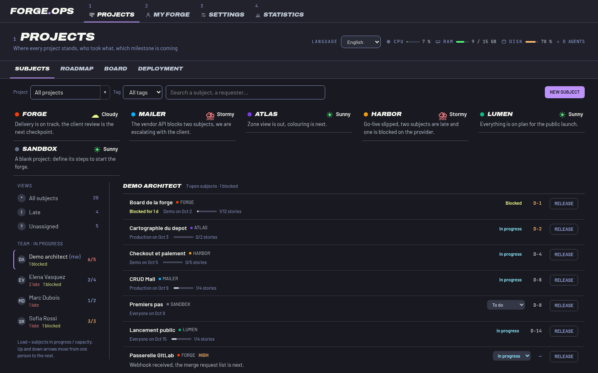
Projets · Roadmap
Une frise pour le daily.
Le chef de projet présente la roadmap en direct pendant le daily : début, jalon, dépendances entre sujets. Ce que l'on montre est l'état réel, pas une diapositive.
- Barres de début à jalon par sujet
- Dépendances visibles entre sujets
- Tout se modifie sur place
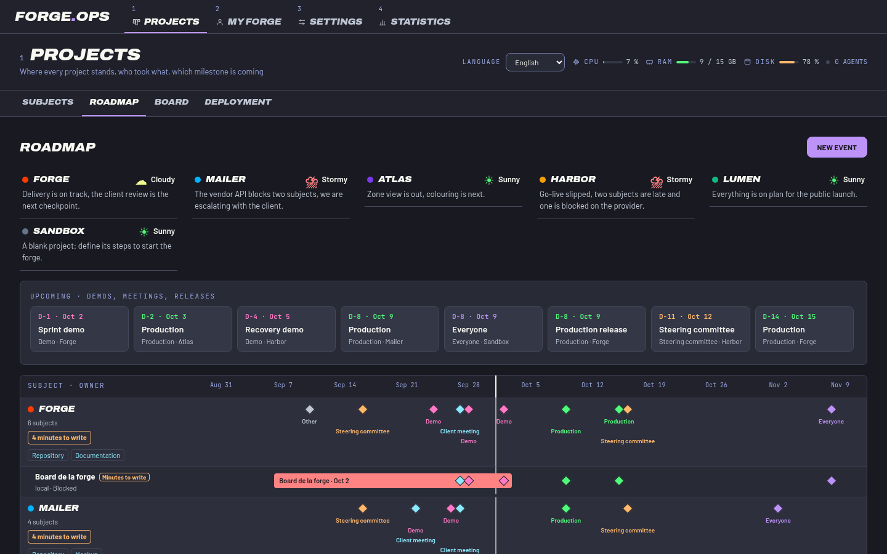
Projets · Tableau
Des colonnes que votre équipe écrit.
Les colonnes sont un modèle propre à chaque organisation : quel agent travaille la story, avec quelle commande, quel modèle. Les preuves, elles, ne sont pas négociables.
- Workflow libre par colonne : agent, skill, préprompt
- Stories bloquées avec leur raison, dépendances visibles
- Une story en attente de vous est signalée
Ma forge
Votre poste de travail.
Vos épiques, vos fichiers, vos rendus, et ce que votre machine peut encore prendre. Chacun développe avec son propre Claude Code, sur son PC ou sur son VPS.
- Kanban ou pipeline selon votre préférence
- Budget du jour et sessions restantes affichés
- Ressources machine en direct avant de lancer un groupe de stories
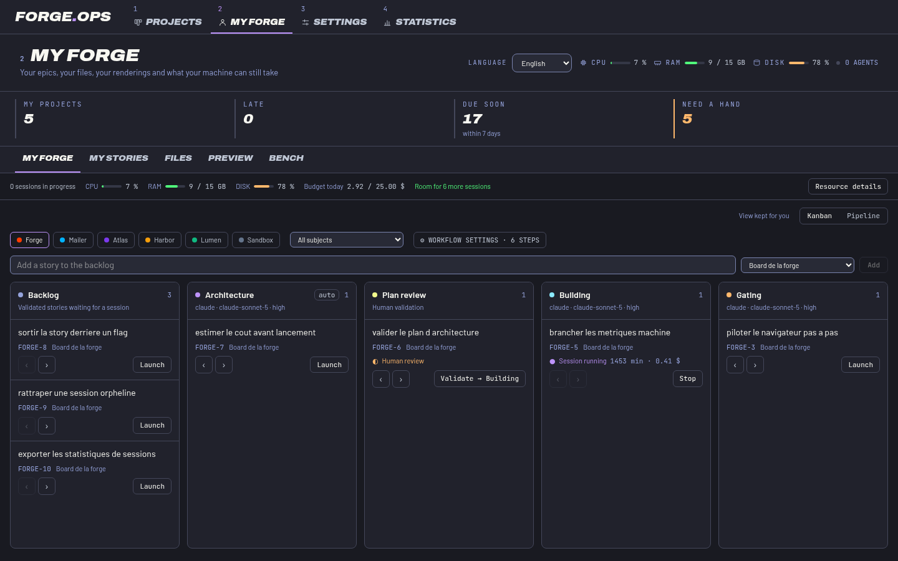
Ma forge · Stories
Écrivez la story avec Claude.
Choisissez une épique, Claude propose le découpage et rédige. Vous lui répondez, la carte se réécrit en direct, puis vient la story de test jumelle.
- Ticket en direct à côté de la conversation
- Score de complétude : rien ne part sous 60
- Envoi groupé en réserve une fois les deux parties écrites
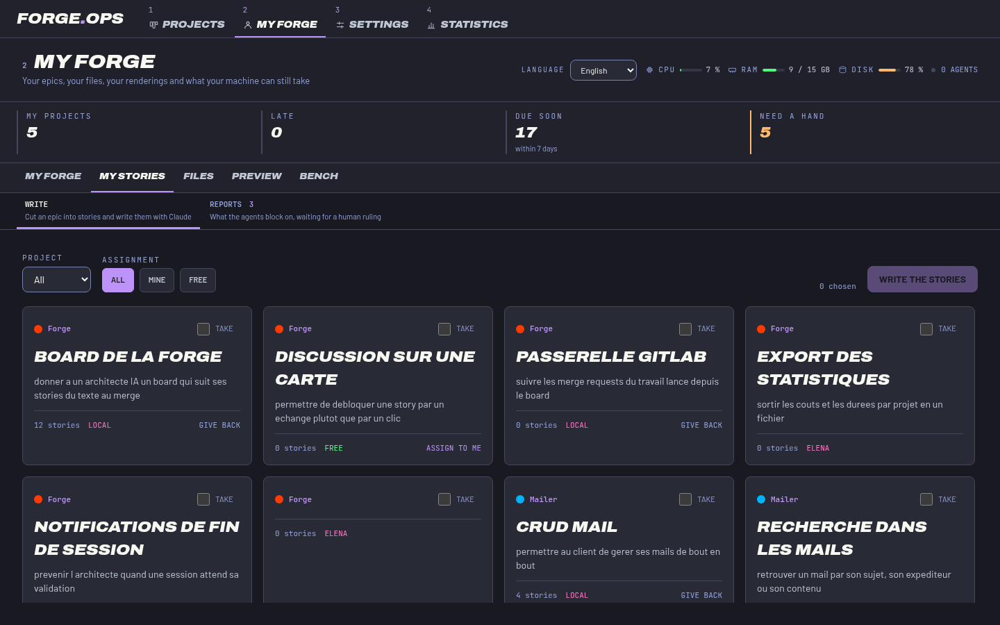
Statistiques
Ce que ça coûte, où ça passe.
Sessions, coût total, temps machine, agents les plus sollicités, temps par étape, et comment les sessions se terminent. Un plafond de coût coupe la session, pas seulement une alerte.
- Coût et temps par story
- Plafond de dépense qui coupe vraiment
- Historique lu dans votre propre base
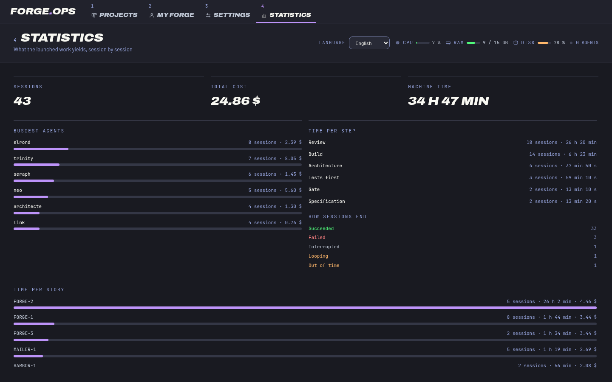
Pour qui
Chacun son rôle, le même tableau.
Chef de projet
Présente le daily sur la version web : sujets, roadmap, blocages. Pas de diapositives à préparer.
Directeur
Suit tous les projets, leur météo et la charge de l'équipe. N'écrit que des épiques.
Développeur
Développe depuis l'app avec son Claude Code, sur son PC ou son VPS, et valide la dernière porte.
Sur tous vos écrans
Six thèmes, clair et sombre, toutes les tailles.
Volt, Dracula, Nord, Gruvbox, Tokyo Night, Solarized. Quatre tailles de texte, quatre polices, et un contraste vérifié pour chaque palette. Utilisable au téléphone pour le daily.
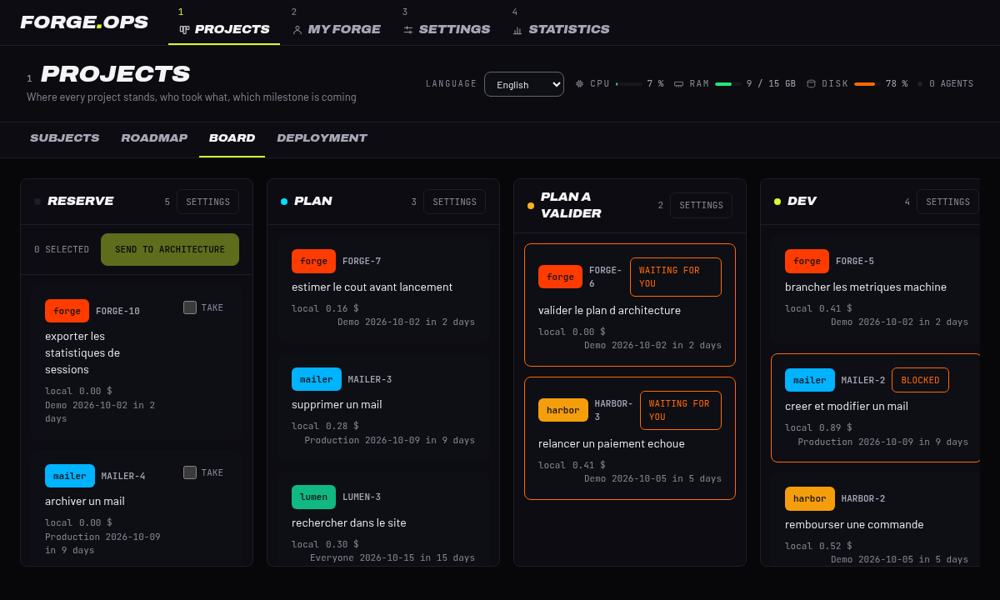
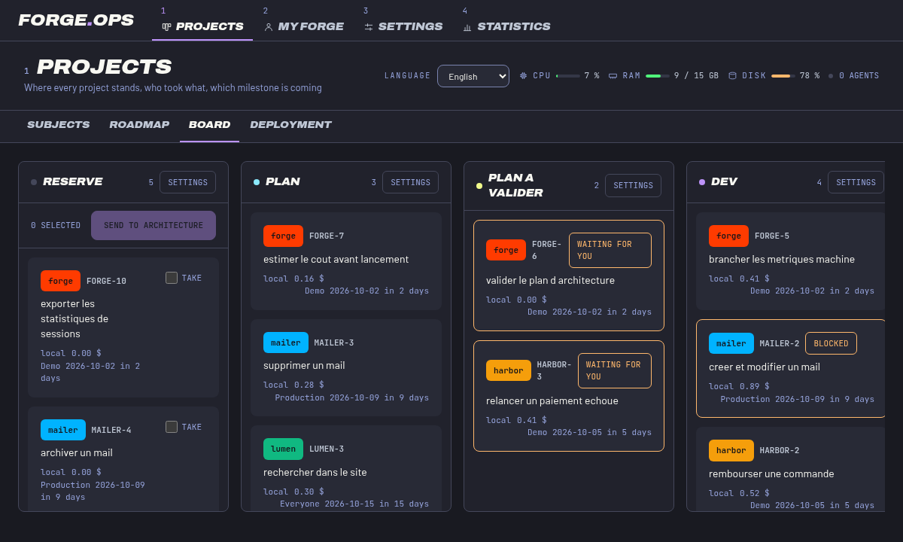
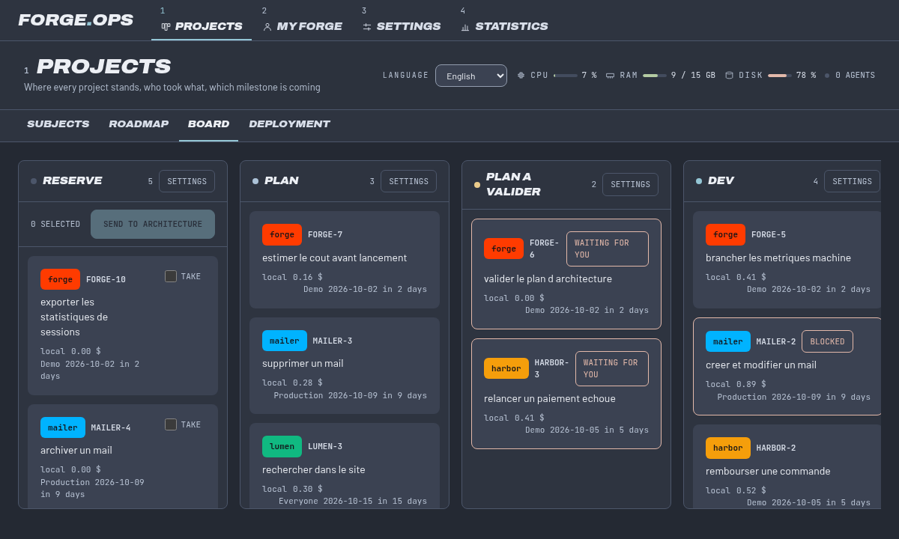
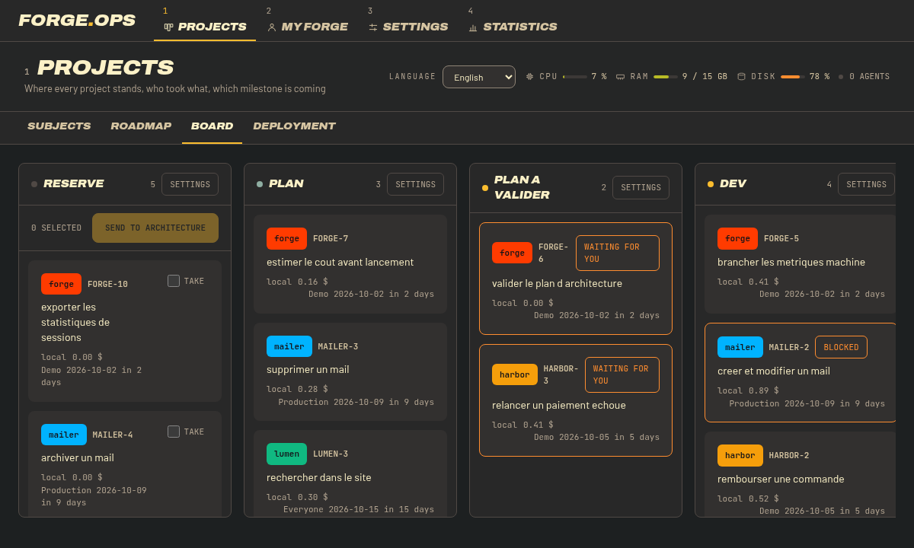
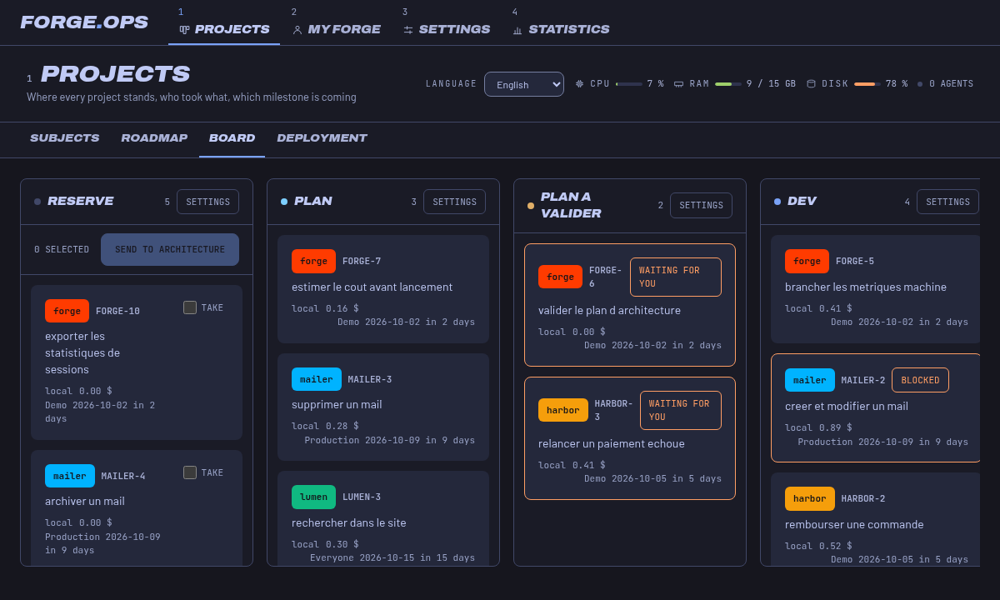
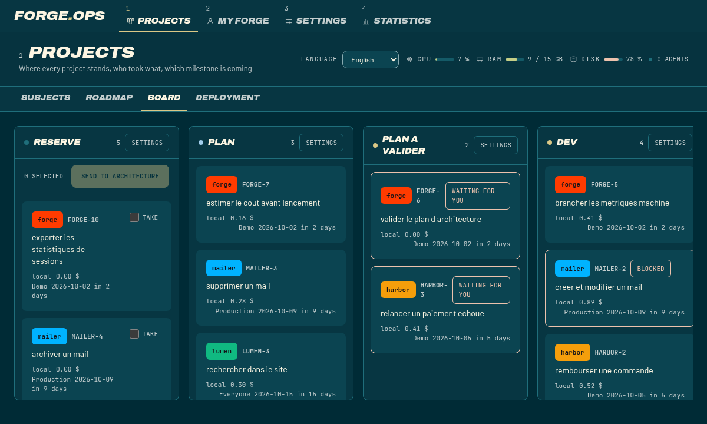
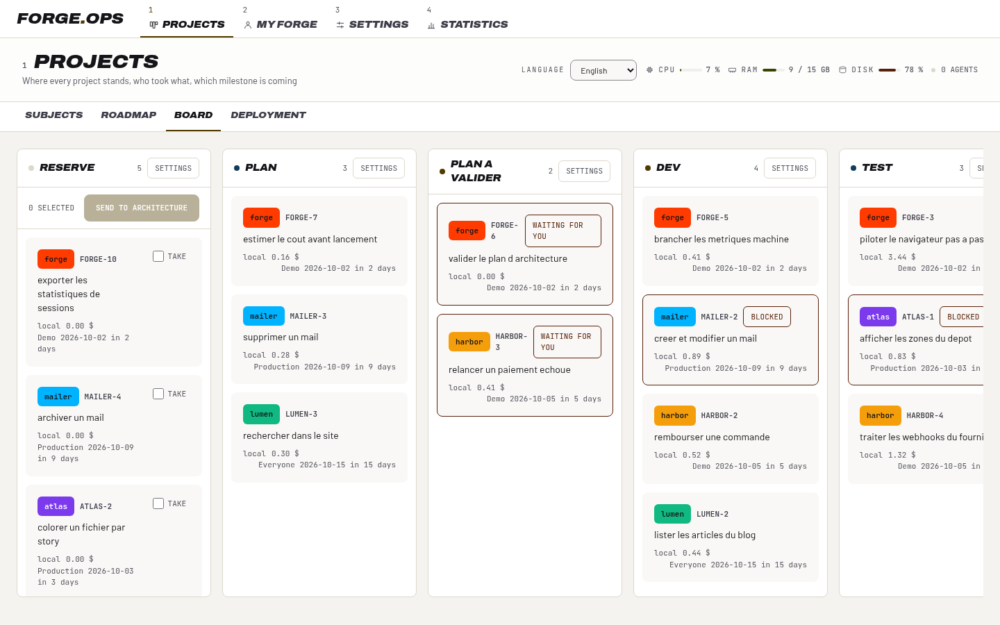
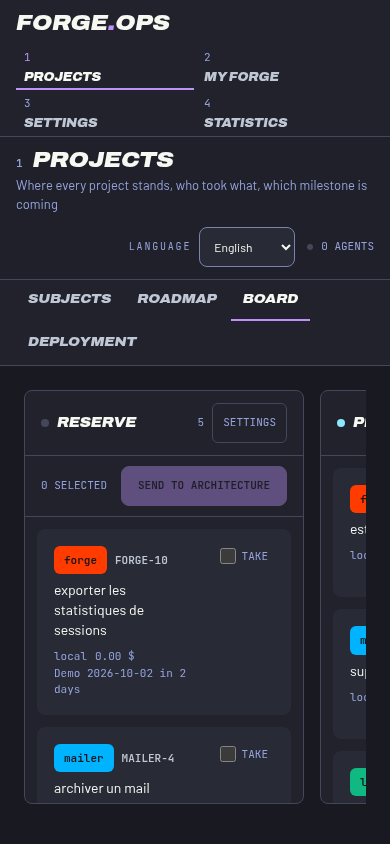
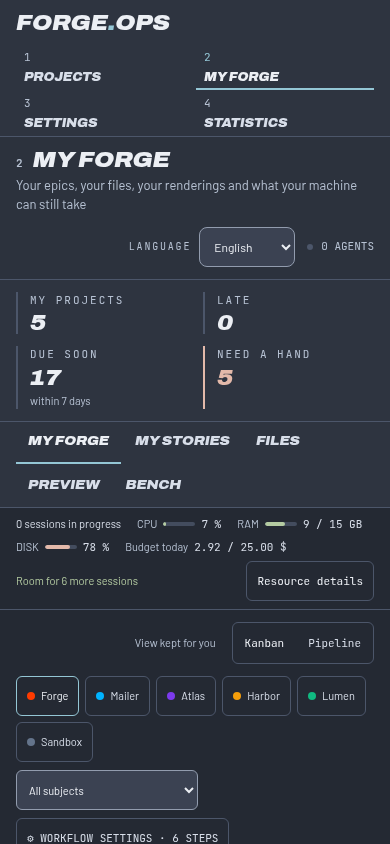
Déployer
Une seule question : où tournent les agents ?
Installez l'app de bureau qui se met à jour toute seule, ou lancez les conteneurs. Tout le reste découle de la réponse.
1Tout sur votre laptop
Pour essayer en dix minutes. Un seul utilisateur, aucun compte, rien de partagé.
2Instance ici, serveur sur un VPS
Le tableau est partagé, le code et les agents restent sur la machine de celui qui les écrit.
3Tout sur un VPS
Instance et serveur hébergés, votre poste n'est qu'un écran.
4Serveur hébergé, instances à vous
Pour une équipe : un serveur commun, chacun son instance où il veut.
L'app de bureau
Installez-la, oubliez-la.
Windows, macOS et Linux. L'app se met à jour toute seule et vit dans la barre système. Un menu de serveurs permet de passer de votre VPS à celui de l'équipe, avec une session par serveur.
- Connexion avec Google ou Microsoft, ou un compte local
- Plusieurs serveurs enregistrés, une session chacun
- Lancement au démarrage, mise à jour automatique
Installation guidée en ligne de commande
# choisit la topologie, génère les secrets, configure Google et Microsoft npm run forge-ops -- init # vérifie Docker, les secrets et la santé de l'instance npm run forge-ops -- doctor
Gratuit
Gratuit pour de vrai, pas en période d'essai.
Forge Ops est un logiciel libre sous licence AGPL-3.0. Pas d'abonnement, pas de siège à payer, pas de compte à créer chez nous. Vous l'exécutez, vous le modifiez, vous l'hébergez.
| Ce qui compte | Un outil SaaS classique | Forge Ops |
|---|---|---|
| Prix | Par siège, par mois | 0 €, toujours |
| Où vivent vos données | Chez l'éditeur | Chez vous |
| Où tournent les agents | Dans leur cloud | Sur votre PC ou votre VPS |
| Validation d'une étape | Une case à cocher | Un fichier de preuve lu par le serveur |
| Dernière porte | Automatique | Toujours un humain |
| Code source | Fermé | Ouvert, modifiable |
Questions
Ce qu'on nous demande.
Faut-il un compte Claude ?
Les sessions d'agent utilisent le Claude Code installé sur la machine qui exécute l'instance, avec votre propre connexion. Forge Ops n'envoie rien à un service tiers de son côté.
Puis-je utiliser un autre agent que Claude Code ?
L'agent est un pilote interchangeable. Claude Code et Codex sont branchés aujourd'hui, et l'idée est de ne dépendre d'aucun éditeur.
Mes données quittent-elles ma machine ?
Non, sauf si vous choisissez un serveur partagé. La base est un fichier SQLite chez vous, et ce que l'outil stocke sur les personnes peut être effacé.
Que signifie AGPL pour mon entreprise ?
Vous pouvez l'utiliser, le modifier et l'héberger librement. Seule obligation : si vous faites tourner une copie modifiée comme un service, vous publiez vos modifications.
Voyez-le tourner, sans rien installer.
La démo est un vrai tableau, figé sur des données d'exemple, avec sa visite guidée en six langues.